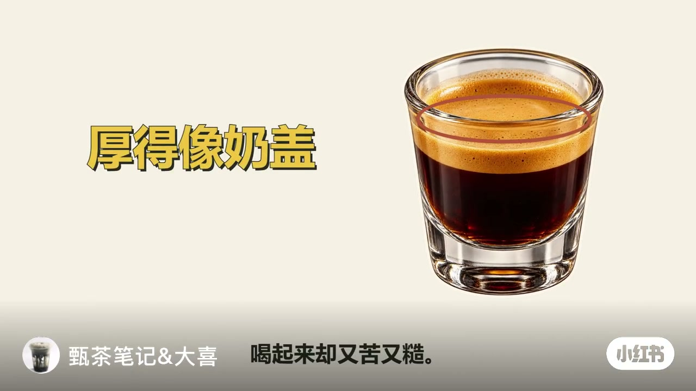
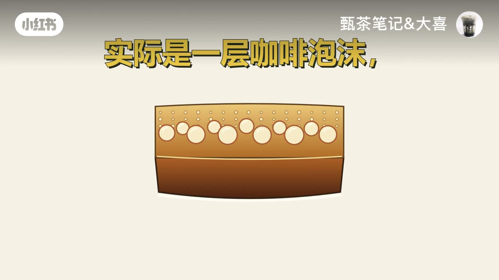
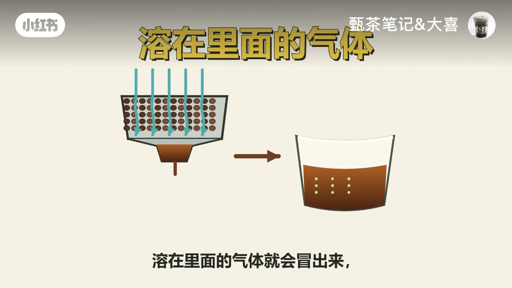
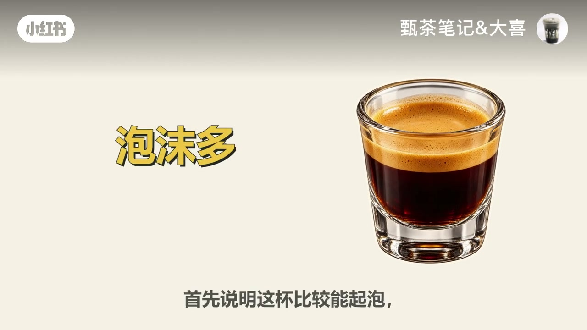
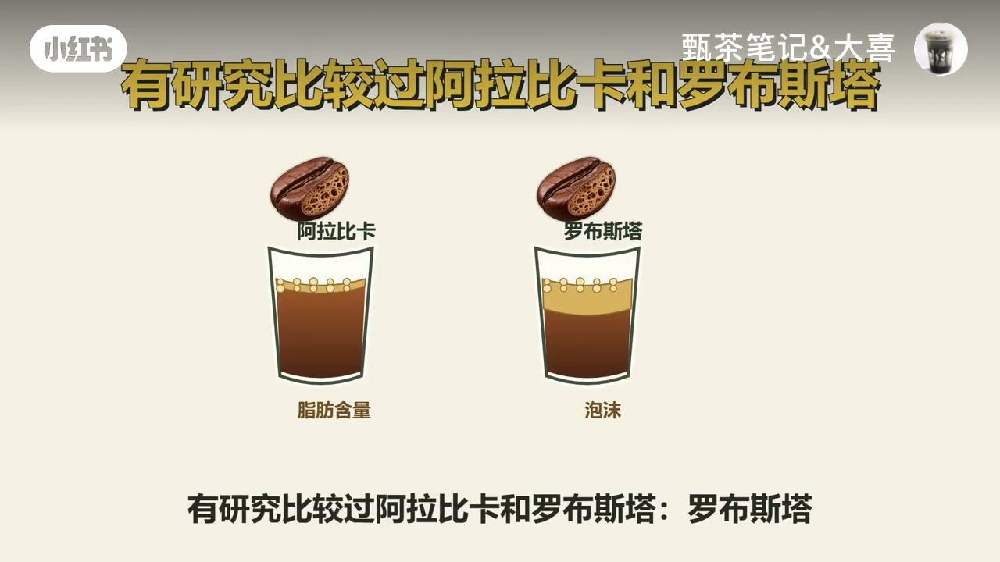
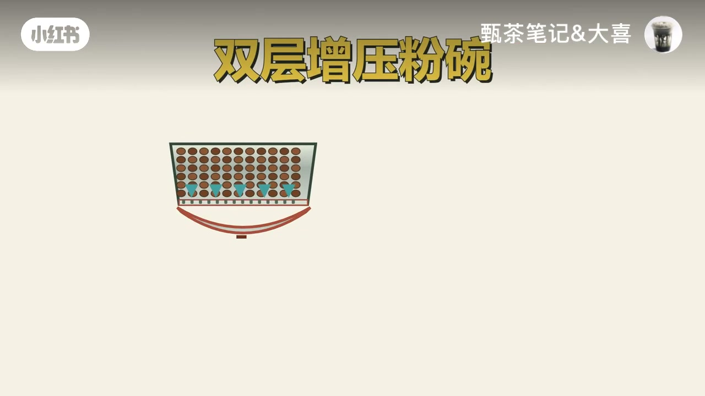

内容要点
小红书账号「甄茶笔记&大喜」用一杯「金黄油脂厚得像奶盖、喝起来却又苦又糙」的浓缩开场，追问杯面那一层到底是咖啡精华还是泡沫。视频把口语里的「油脂」正名为 crema（咖啡泡沫）：体积主要由气泡撑起，气体多来自烘焙残留的二氧化碳；泡沫厚首先说明能起泡，不能换算成萃出了更多精华。同一包豆排气后泡沫变薄、罗布斯塔往往比阿拉比卡更易起泡、双层增压粉碗也会改观感——最后建议先轻轻搅匀再尝整杯，把泡沫当观察线索。下列实录按时间线展开；观点均标注为作者口播与画面。
知识结构
厚得像奶盖却苦又糙；先问清这一层是精华还是泡沫。
所谓油脂=crema；气泡来自豆内二氧化碳，流出粉碗后减压冒泡。
泡沫多=比较能起泡≠更多精华；排气变薄≠变难喝。
罗布斯塔泡沫更多但脂肪未必更高；增压粉碗会「造」泡沫观感。
泡沫有用但非越多越好；搅匀后看酸苦、杂味与余味。
别用 crema 厚度给浓缩打分。把它当气体与起泡能力的线索，先搅匀再以整杯味道判断；薄了也不必急着追更厚。
00:00–00:15开场：厚得像奶盖，却又苦又糙
视频先摆出感官冲突：这杯浓缩金黄的「油脂」厚得像奶盖，喝起来却又苦又糙。大字把观众直觉压成一个问题——你追求的这一层，到底是咖啡精华还是泡沫？
镜头立刻补上动态证据：刚接出来的浓缩表面会冒出细小泡泡；放一会儿，这层东西又慢慢变薄。反差与变化一起，把「厚度=好喝」的默认等式先拆开。

00:15–00:56正名：油脂实际是 crema；体积靠气泡
作者纠名：习惯叫的油脂，实际是一层咖啡泡沫，叫 crema。里面有咖啡液、油脂和其他咖啡成分，但撑起这一层体积的是许多细小气泡。气泡主要来自咖啡豆里的二氧化碳——烘焙时产生、一部分留在豆子内部。
萃取时，热水在压力下穿过咖啡粉，把这些气体带进咖啡液；液体流出粉碗后压力降低，溶在里面的气体冒出来形成细小泡泡，有点像汽水开瓶。咖啡中的一些成分又能帮气泡维持一阵，于是杯面留下金棕色一层；气泡逐渐破裂，泡沫也就慢慢变薄。


00:56–01:20泡沫多≠精华多；排气会让同一包豆变薄
机制讲完后，作者收紧结论：「泡沫多，首先说明这杯比较能起泡，不能直接换算成萃出了更多精华。」顺着同一条气体逻辑再看日常现象：为什么同一包豆前几天泡沫很厚，后来却薄了？
豆子放着会慢慢排气。其他条件接近时，留下的气体少了，萃取时能冒出来的泡泡也可能变少。因此泡沫变薄，不能就此断定咖啡变难喝；反过来，刚烘好时泡沫很多，也不代表此时最适合喝。

01:20–01:47豆种与粉碗：厚度和含油量不是一回事
作者接着问：换一种含油更多的豆，泡沫会不会就更厚？画面给出研究对照叙事——阿拉比卡与罗布斯塔相比，罗布斯塔做出的泡沫更多，但阿拉比卡的脂肪含量反而更高。这说明这层「油脂」的厚度，和真正含了多少油并不是一回事。
就算同一包豆，粉碗结构也可能让泡沫看起来不同。有些家用机的双层增压粉碗会利用出口结构增加阻力，让咖啡更容易形成泡沫。泡沫好看，豆子的风味和萃取结果还是得另外判断。


01:47–02:24有用但非越多越好：搅匀后再给整杯下结论
那这层泡沫对喝咖啡有没有用？作者答：有，它会影响香气释放和入口感受，但作用不是越多越好。作者转述：研究里把泡沫做得更多，并没有让好闻的香气继续增加（视频未给出具体文献名，作观点/转述理解）。
在家判断时，可以先轻轻搅匀再尝，让上面的泡沫和下面的咖啡液混在一起；看入口酸苦是否协调、有没有明显杂味、咽下去以后余味舒不舒服。别只尝到最上面一口就给整杯下结论。收束句很干脆：泡沫厚，不会把一杯难喝的浓缩变成好咖啡；泡沫薄，也不用急着追求更厚——把它当观察线索，最后用整杯的味道判断。片尾互动：「你有没有喝过泡沫特别漂亮、入口却让你失望的浓缩？」
详细文字转录（64段）
以下内容按 Whisper 原始分段完整呈现，可能包含识别误差；正文已按画面与语境校正（如「含油更多的豆」、crema 正名），转录区保持原样以便核对。
这杯浓缩 金黄的油脂厚得像奶盖
喝起来却又苦又糙
你追求的这一层到底是咖啡精华还是泡沫
看一杯刚接出来的浓缩
表面会冒出细小的泡泡
放一会儿 这层东西又慢慢变薄
那为什么会这样
因为我们习惯叫的油脂
实际是一层咖啡泡沫 叫crema
里面有咖啡液 也有油脂和其他咖啡成分
但撑起这一层体积的是许多细小的气泡
这些气泡主要来自咖啡豆里的二氧化碳
咖啡豆在烘焙时会产生气体
一部分留在豆子内部
萃取时 热水在压力下穿过咖啡粉
把这些气体带进咖啡液
液体流出粉碗 压力降低
溶在里面的气体就会冒出来 形成细小的泡泡
有点像汽水开瓶后冒泡
只不过咖啡里的气体是烘焙产生的
咖啡中的一些成分又能帮这些气泡维持一阵
于是杯面留下了金棕色的一层
气泡会逐渐破裂 泡沫也就慢慢变薄了
所以泡沫多 首先说明这杯比较能起泡
不能直接换算成萃出了更多精华
顺着这个过程再看
为什么同一包豆前几天泡沫很厚 后来却薄了
豆子放着会慢慢排气
其他条件接近时 留下的气体少了
萃取时能冒出来的泡泡也可能变少
泡沫变薄 不能就此断定咖啡变难喝了
反过来 刚烘好时泡沫很多
也不代表此时最适合喝
那换一种含有更多的豆 泡沫会不会就更厚
有研究比较过阿拉比卡和罗布斯塔
罗布斯塔做出的泡沫更多
但阿拉比卡的脂肪含量反而更高
这就说明这层油脂的厚度和真正含了多少油
并不是一回事
就算用同一包豆
粉碗的结构也可能让泡沫看起来不同
比如有些家用机的双层增压粉碗
会利用出口结构增加阻力
让咖啡更容易形成泡沫
泡沫好看啊
豆子的风味和萃取结果还是得另外判断
那这层泡沫对喝咖啡有没有用
有 它会影响香气释放和入口感受
但作用不是越多越好
研究里把泡沫做得更多
并没有让好闻的香气继续增加
在家判断时可以先轻轻搅匀再尝
让上面的泡沫和下面的咖啡液混在一起
看入口酸苦是否协调
有没有明显杂味
咽下去以后 余味舒不舒服
别只尝到最上面一口
就给整杯下结论
泡沫厚 不会把一杯难喝的浓缩变成好咖啡
泡沫薄 也不用急着追求更厚
把它当观察线索
最后用整杯的味道判断
你有没有喝过泡沫特别漂亮
入口却让你失望的浓缩